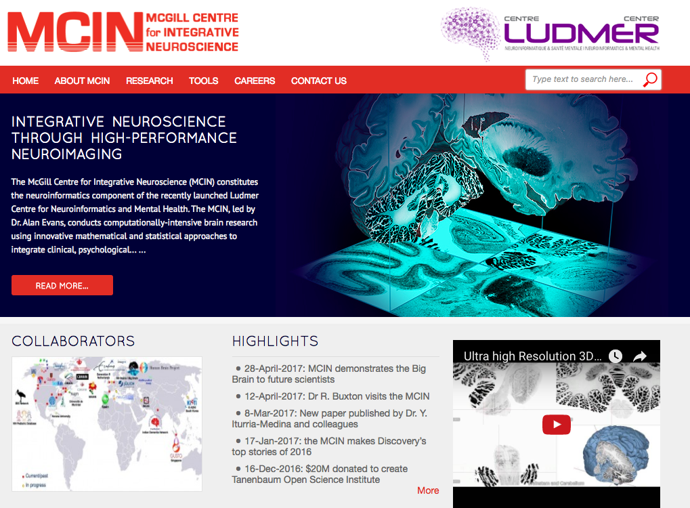
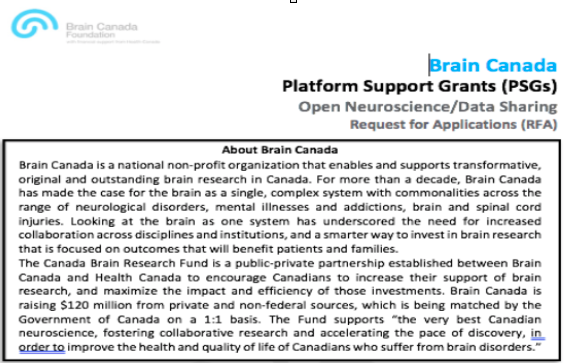

The Healthy Brains for Healthy Lives Ecosystem
INCF meeting - Oslo
|
May 29th, 2017 |
 |

Healthy Brains for Healthy Lives (HBHL) is an interdisciplinary program at McGill University leveraging neuroinformatic technologies to transform terminal or life-long afflications to treatable or even curable conditions.


What’s involved?
Longitudinal acquisition, storage and curation, Transfer, Anonymization, Security, Privacy, Ethics Reproducbility, Interoperability, APIs, Validation, Quality control, Protocol checking Preprocessing, Analysis, HPC Provenance, Ontological standarization, data harmonization Upgrades, Maintenance, Bug fixes User Interface, Javascript, Bootstrap Tracking, Extensibility Data management, Summary statistics, Workflows, Development, Tool integration Data sharing, download, multi-modal linking, querying Image processing, Visualization, Networking, System Administration Partnerships, Funding and HR
HBHL Infrastructure


What is LORIS?
|
“LORIS is a modular and extensible web-based data management system that integrates all aspects of a multi-center study: from heterogeneous data acquisition (imaging, clinical, behavior, genetics) to storage, processing and ultimately dissemination.” |

|
What does LORIS do?

What does LORIS actually do?
LORIS globally

|

|
|


|

|
|
CCNA


|

|

CBRAIN Computing Resources

CBRAIN portal


|

|
CIVET

NIAK

Data Sharing
Data Sharing Issues
| Benefits | Hurdles |
|---|---|
| More citations | Fear |
| Reduces waste/duplication | Technical challenges |
| Increased exposure | Privacy concerns |
| Access to larger datasets | Data Harmonization |
| Access to rare data | Interoperability |
| Less attrition | Reproducibility |
| Increased validation | Obtaining ethics |
| Saving Tax $$/more funding | Public dataset not identical |
Global Data Sharing Initiatives

Interoperability

Collaboration with global data sharing groups
INCF, Open Science Framework, NITRC, Allen Institute, NDAR, HAWG (Atlas Building Group), Organization Human Brain Mapping, Human Brain Project, Compute Canada, Maelstrom, Edinburgh BRAINS ImageBank, COINS, XNAT, VIP, BrainCode, BIDS, NIDM, NeuroDevNet, GUSTO, QPN, Boutiques, VIP

|
Important value of hackathons to data sharing initiatives 
|

|

|
Open Science

|

|
Open Science

Cyberinfrastructure

Open Science Functionality
| Acquisition & Storage | Dissemination & Analysis |
|---|---|
| Organized/Accessible data | Centralized repository |
| Long term storage | Provenance Capture |
| Quality Control mechanisms | API for interoperability |
| Web visualization | Consent is factored in |
| Tablet/Mobile Friendly | User account access control |
| Anonymized automatically | Completely de-identified |
| Cross-modal linking | Cross-study correlation |
| Online Data Querying | Access to high performance computing |
National Network

|
 |
Including "Data Publishing"

Acknowledgments
Alan Evans, Alex Zijdenbos, Reza Adalat, Penelope Kostopoulos, Louis Collins, Vladimir Fonov, Marc Rousseau, Tarek Sherif, Pierre Rioux, Nic Kassis, Leigh MacIntyre, Claude Lepage, Ilana Leppert, Carolina Makowski, Natasha Beck, Tristan Glatard, Bert Vincent, Lindsay Lewis, Alden Woodward, Sylvain Milot, Jean Francois Malouin
LORIS Developers: Dario Vins, Jonathan Harlap, Matt Charlet, Andrew Corderey, Sebastien Muehlboeck, David Brownlee, Zia Mohades, David MacFarlane, Cecile Madjar, Mia Petkova, Christine Rogers, Rathi Gnanasekeran, Justin Kat, Nicolas Brossard, Tara Campbell, Jordan Stirling, Mouna Safi-Harab, Greg Luneau, Rida Abou-Haidar, Daniel Kroetz, Pierre-Emmaunel, Tom Beaudry, Shen Wang, John Saigle, Sanitago Paiva & Surthy Matthews